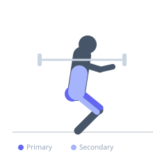

Exercise guide / Cambered Bar Deep Squat
Cambered Bar Deep Squat
A barbell squat variation using a cambered (arched or bowed) bar. The cambered bar hangs the weight below the axis of the bar, lowering the center of mass and creating greater stability demands as the suspended weight shifts during the squat. The bar's shape also allows the torso to remain more upright compared to a straight bar squat, reducing lower back stress while maintaining high quadriceps and glute demand. This is used by powerlifters and strength athletes as a variation squat to develop stability and work around shoulder limitations.
Primary muscles
rectus femoris
vastus lateralis
gluteus maximus
Secondary muscles
biceps femoris long head
erector spinae
adductor magnus
Stabilizers
transverse abdominis
gluteus medius
Equipment
Power Rack (Squat Cage)


Starting position
- Position the cambered bar across the upper back (high or low bar position) in a power rack. The bow of the bar hangs below the loaded sleeves. Step out and assume a standard squat stance.
Setup
- Cambered bars require a power rack with standard J-hooks. The bar must sit stably on the hooks before unracking. Never set up without a rack.
Steps
- Step 1: Unrack the cambered bar and step out to your squat stance.
- Step 2: Descend to depth (below parallel or as deep as mobility allows), managing the increased stability demand from the suspended load.
- Step 3: Drive through the floor to return to the standing position.
- Step 4: Re-rack after completing the set.
Coaching cues
- The bar hangs lower — feel the difference in balance point compared to a standard bar
- Keep the chest up — the cambered bar encourages a more upright torso
- Control the descent — the swinging load amplifies any forward lean
Breathing
- Inhale and brace before descent. Exhale at the top or in a controlled Valsalva throughout.
Range of motion
- Below parallel (hip crease below knee) is the standard target. Full depth if mobility allows.
Tempo
- 3s eccentric, 1s pause at bottom optional, 2s concentric ascent
Common mistakes
- Using too much weight without first adapting to the cambered bar's stability demands
- Allowing the suspended load to swing anteriorly during descent
- Collapsing the knees inward during the ascent
Safety
- The suspended load shifts the balance challenge — reduce weight compared to straight bar squat and build progressively
- Use safeties in the rack at all times
- Learn the barbell squat and standard specialty bar variations before the cambered bar
Training
- strength: 2–5 reps
- endurance: 5–10 reps
- strength: 3–5 sets
- endurance: 3–4 sets
- Rest: {'strength': 180, 'endurance': 120}